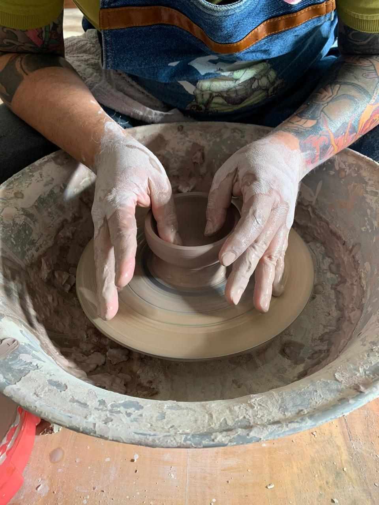
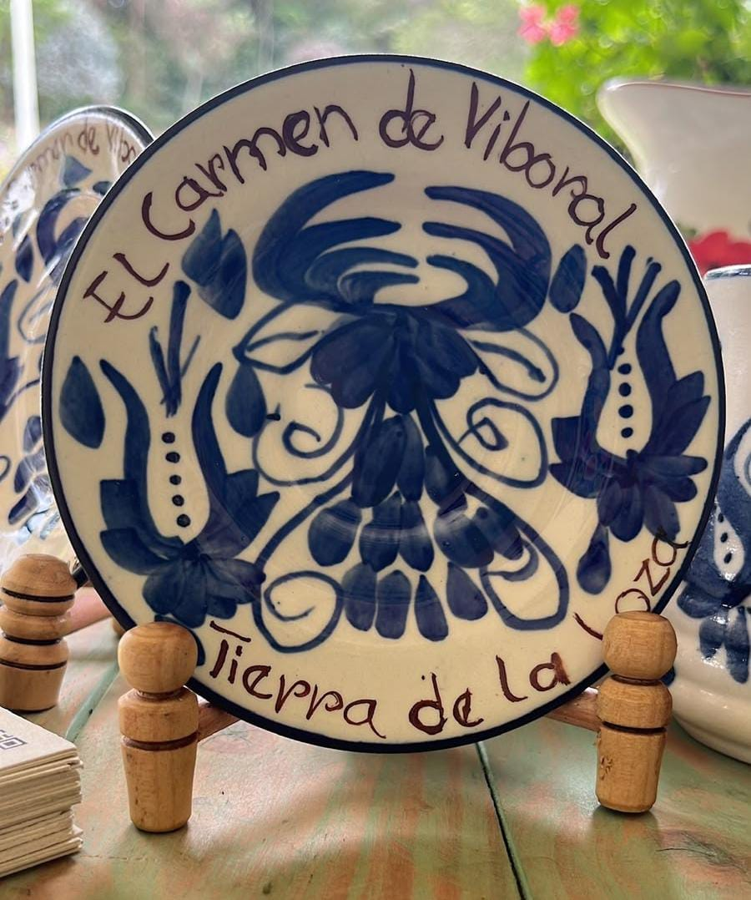
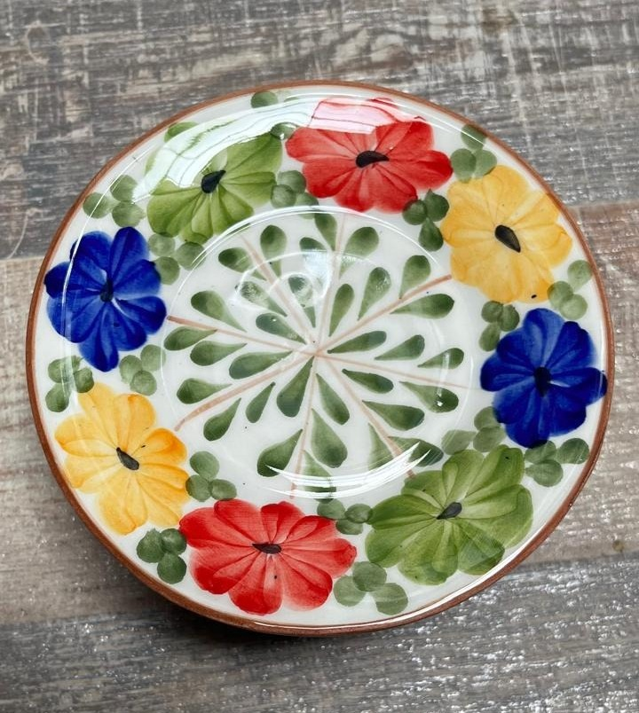

Manifiesto
Agradecer a la tierra por la materia.
Al fuego por la transformación.
Y a la vida por permitirnos convertir la tierra en algo que acompaña la vida.
Transformamos la tierra sin olvidar de dónde viene.

Misión
En Cerámicas Alquimia recibimos de la Pacha Mama la tierra como materia, memoria y origen, y la transformamos con nuestras manos en piezas que buscan honrar su esencia.
Somos un encuentro entre la tradición cerámica de El Carmen de Viboral, el saber de los oficios ancestrales y la exploración de nuevas formas de crear.
Nuestra misión es crear desde el respeto por la tierra, preservar el valor del oficio y abrir nuevos caminos para la cerámica.

Visión
Ser una voz de la cerámica artesanal contemporánea en Colombia, llevando la esencia de El Carmen de Viboral hacia nuevos territorios sin perder la memoria de sus raíces.
Queremos que Cerámicas Alquimia sea reconocida como una marca que crea desde la tierra y para la vida.